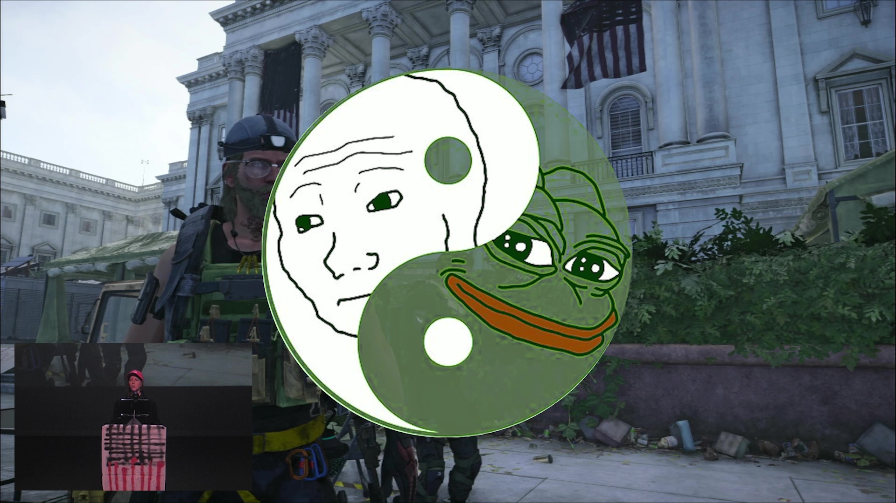
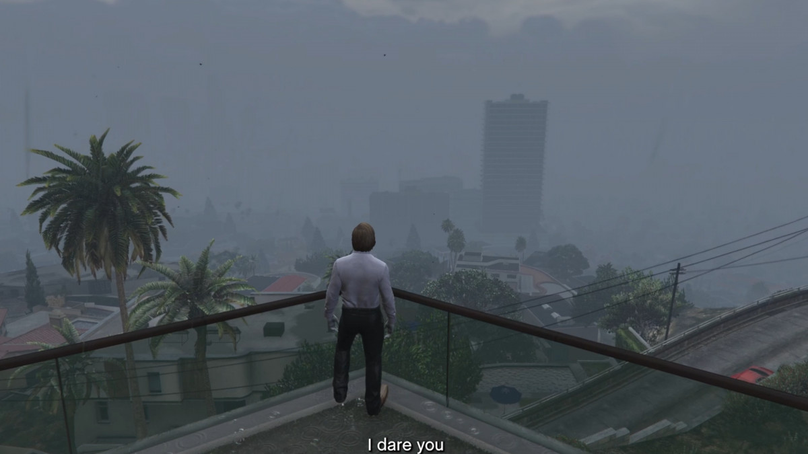
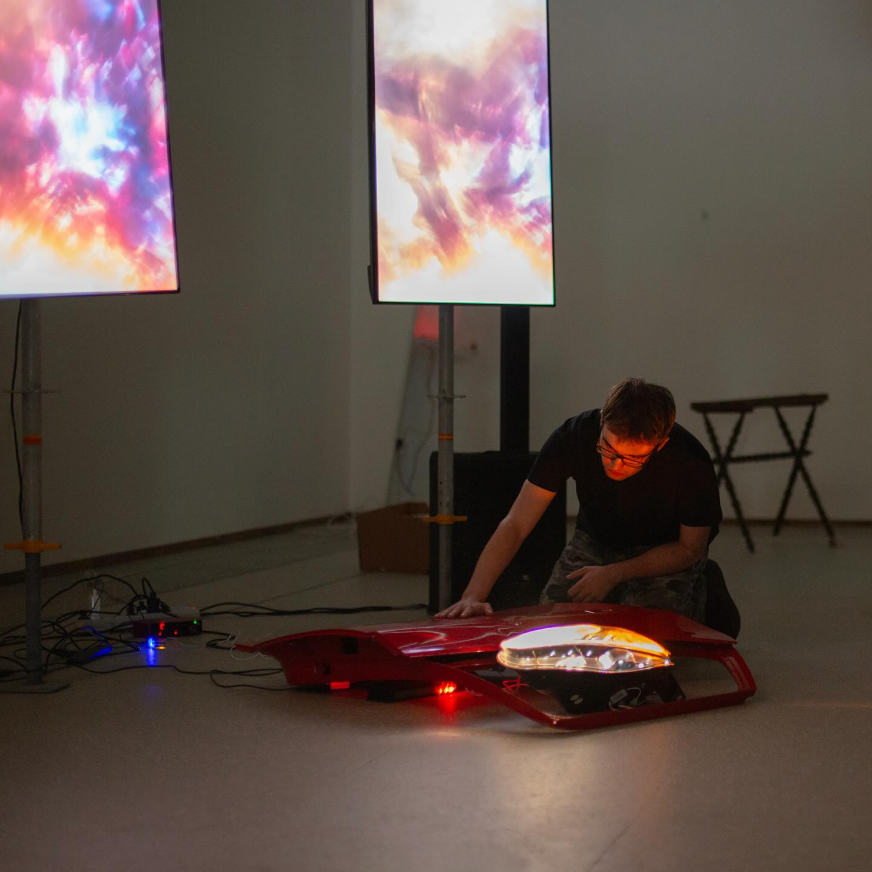
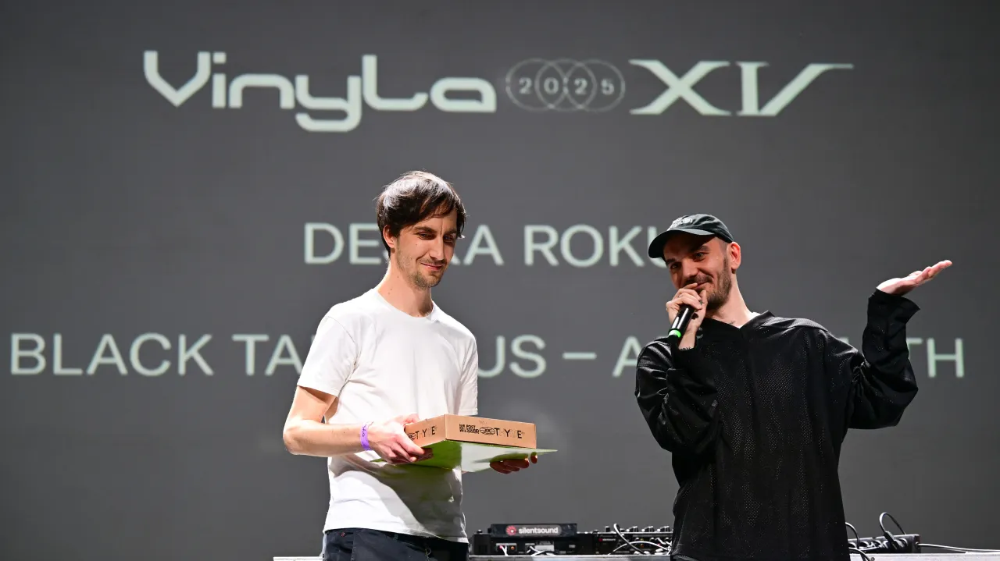
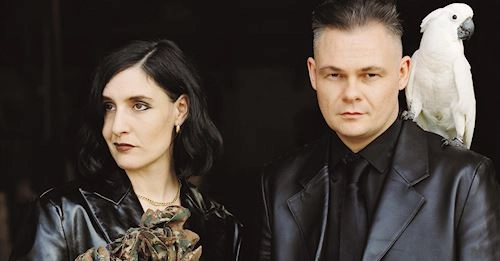

2026 / critical text / artycok tv
Translating Worlds
Ondrej Trhon writes about therapy sessions w/YouTube, VTubing, the avatar body, livestream anxiety and the platform job interview.
open sourceexternal log / source pile / downloaded preview layer
Screenings, performances, live traces, press, podcasts, credits and public web residue. Preview images were downloaded from public page metadata where the source exposed one.

2026 / critical text / artycok tv
Ondrej Trhon writes about therapy sessions w/YouTube, VTubing, the avatar body, livestream anxiety and the platform job interview.
open source2025 / publication / avu
Matteo Ruggiero appears among the authors of the AVU-supported publication on horror, artificial bodies and avatar culture.
open source
2025 / paf / jine vize cz
GTA V, autonomy loops and car-body mythology entered the Jine Vize CZ 2025 finalist selection through PAF Olomouc.
open source
2025 / exhibition-performance / gampa
Performed during Neni to tak spatny, the FaVU Intermedia Studio intervention at GAMPA around cars, wreckage, voice and bodily systems.
open source2023 / ep press / full moon
Full Moon covered the EP release through Italian-Czech identity, social-media addiction, online childhood and experimental pop electronics.
open source
2026 / vinyla night / archa+
Czech Television's report on the Vinyla awards notes sxilence among the special guests performing during the festival-format night.
open source
2025 / vfx + graphic design / lebanon hanover
Lebanon Hanover's official page credits Matteo Ruggiero with Oliver Torr for VFX and graphic design on the Torture Rack video.
open source2024 / ok story / ostrava
GoOut archive for OK Story during Ostrava Kamera Oko: Anderson Do Paraiso, Sxilence and more in the Ostravica night system.
open source2024 / kabinet muz / vinyla + bastl
Venue listing for the Vinyla/Bastl concert night at Kabinet MUZ, connecting sxilence to the wider Czech experimental pop scene.
open source2025 / czech k-pop / goout
GoOut lineup page connecting sxilence to Toyota Vangelis, Wierdsky, Mat213, Klara Wodehn, litterbin, Ai Fen and Princip.
open source2024 / festival live / ostrava kamera oko
Festival listing for the Brno-based musician and producer layer: global club, post-rap, crystalline sound design, dark pop machinery.
open source2026 / construction crew / ra
Resident Advisor lists sxilence with count and MC GOLEM as Construction Crew, stripping bass, grime and bars down to club pressure.
open source2025 / blog mention / create digital music
CDM links sxilence with BoLs/sLoB and Toyota Vangelis in the Kluci z garaze hyperpop-adjacent Czech music weather system.
open source2024 / podcast-interview / reflektor
Radio 1's Reflektor episode with Toyota Vangelis and Sxilence around Kluci z garaze, Moody Moon Noize and the Czech digital pop circuit.
open source2024 / softspot / kabinet muz
Early Kabinet MUZ Softspot bill after Opravit se, framing sxilence as experimental singing/rap with detailed beats.
open source2024 / kafara / brno
Brno concert listing with sxilence at Kafara alongside yanntray and DJ Venktovka from Opak Dissu.
open source2024 / underdogs / hearts ceremony
Underdogs night with Fae Bestia, Petr Bursa, sxilence and others: dark pop, experimental electronics and heart-transplant club feelings.
open source2024 / kluci z garaze / kabinet muz
Kabinet MUZ presents the club-boyband formation of BoLs/sLoB, sxilence and Toyota Vangelis as mutant songwriting electronics.
open source2025 / bike jesus / prague
GoOut listing for a Bike Jesus album-release night where sxilence appears alongside Mezi patry klid and Aid Kid.
open source2025 / amphibian / optic hazard
Quadrophonic soundsystem anniversary listing with COUNT & sxilence: Optic Hazard among the live and club lineup.
open source2025 / jesneni / jesenik
Festival listings place sxilence in Jesenik's public-space programme alongside concerts, AVU installations, screenings and performances.
open source2025 / jesneni / full moon
Full Moon's festival note names Matteo Ruggiero's sxilence project in the fifth Jesneni programme with Aiko, Guest Julka and DJ Fedor.
open source2025 / stegi radio / glazmo network
Radio/show page describing sxilence as the Italo-Czech project moving through a shadowy post-internet reality.
open source2025 / bastl jam / kabinet muz
Kabinet MUZ listing for Bastl Jam with sxilence in the local electronics, instrument and live-jam orbit.
open source2026 / ankali anniversary / prague
RA lists MC GOLEM, COUNT and sxilence live in the anniversary sprawl of Ankali & Planeta Za.
open source2024 / ankali anniversary / prague
Older RA trace for COUNT & sxilence inside Ankali's seventh anniversary lineup.
open source2026 / moon noize / construction crew
Moon Noize artist page for the new Brno group: count, MC Golem and sxilence reducing 140 bpm to grime/dubstep bone matter.
open source2026 / vinyla / official report
Vinyla's own report confirms sxilence among the special guests performing during the festival-format awards night.
open source2026 / vinyla / musicserver
Additional music-press confirmation of sxilence appearing at Vinyla Night in ARCHA+.
open source2026 / jesneni / official festival
Current official Jesneni page lists sxilence among the announced performers for the sixth edition.
open source2024 / underdogs / glitter hit
Denik Alarm's Glitter Hit preview names the Underdogs show as sxilence's second live show: a tiny but sharp origin trace.
open source